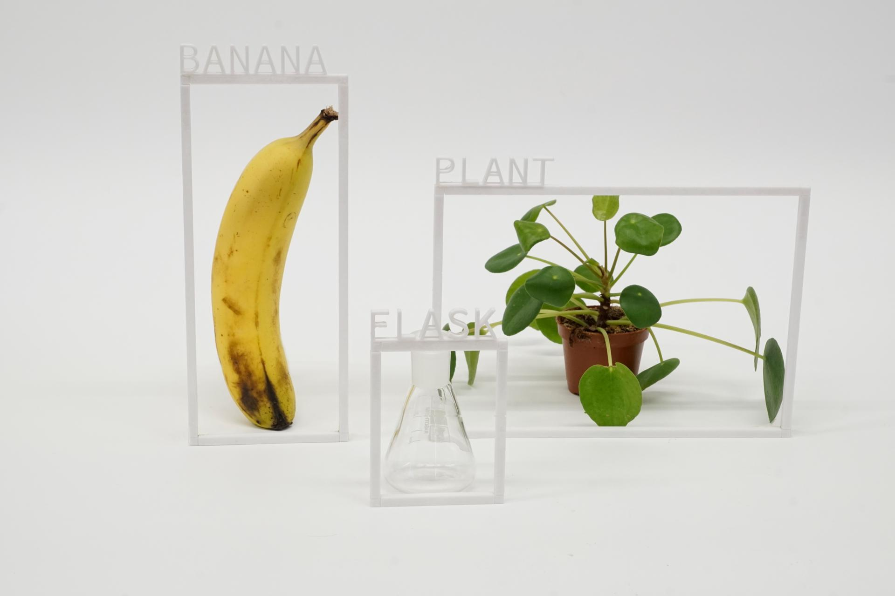
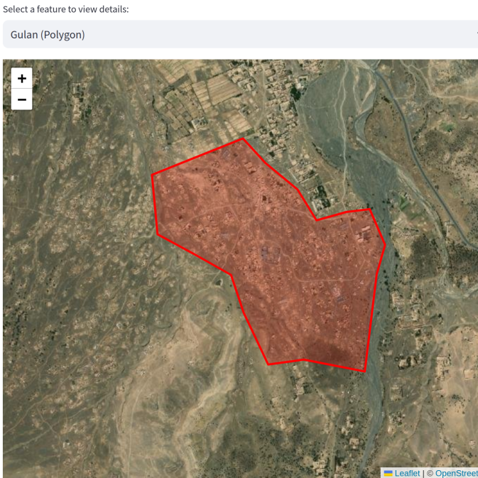
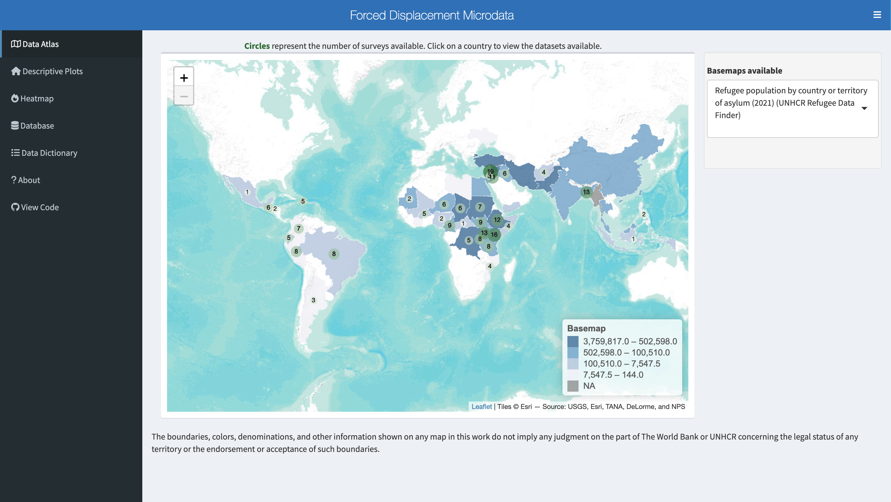
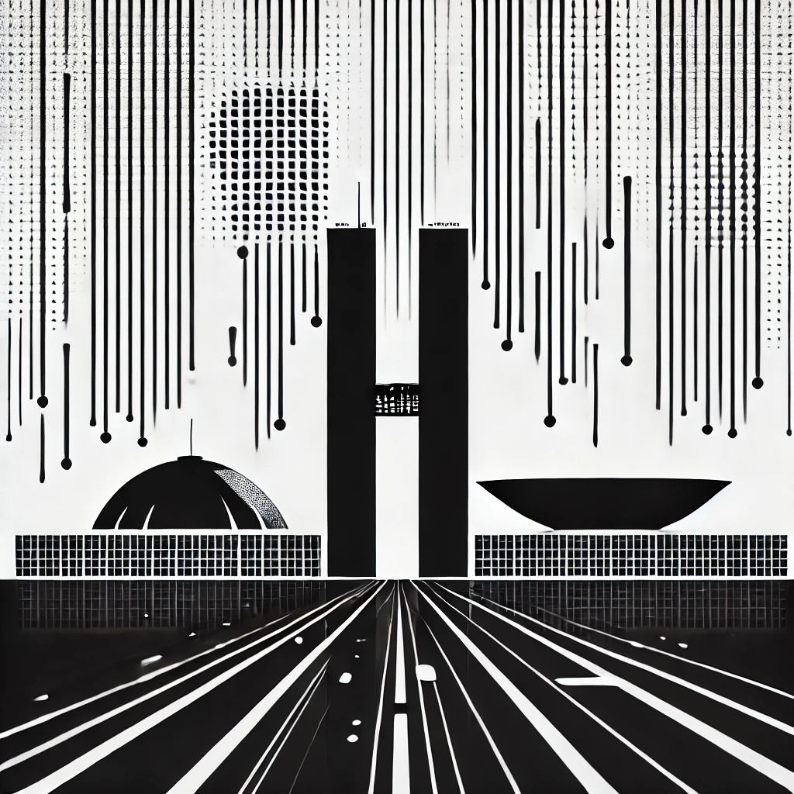
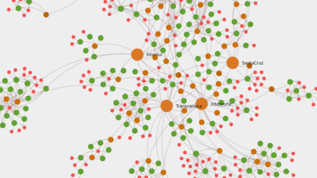

BERT-based model specialized in Brazillian Portuguese law bills.

Shiny dashboard about gaps in microdata on forced displacement.
Text classification model to detect gun violence reports in Brazilian Portuguese.
Statistical models and analysis for the Fragile Families and Child Wellbeing Study.


Data visualization of the bus owners’ network in Rio de Janeiro..